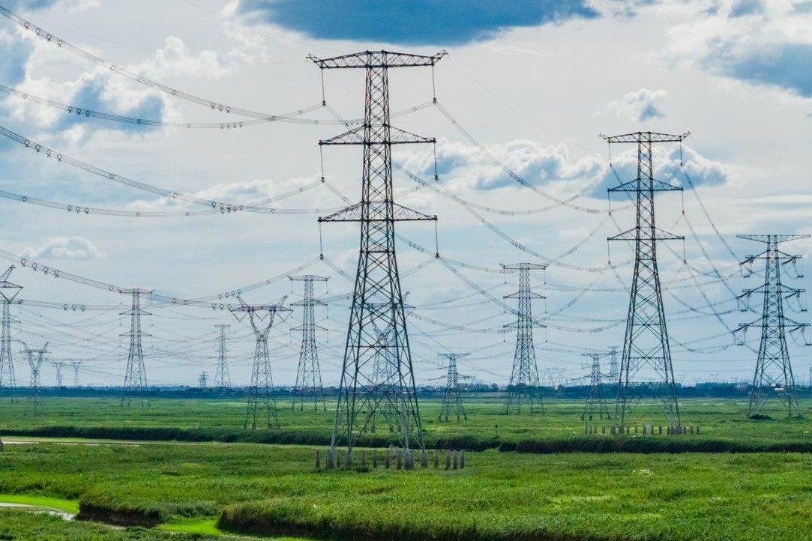

Fernanda Queiroz
31/10/2026

Você já parou para observar as torres ao seu redor? Encontramos torres de transmissão todos os dias: no caminho para o trabalho, durante uma viagem ou até mesmo quando olhamos distraidamente pela janela. Mas você já percebeu que elas não são todas iguais? Existem diferentes formatos, tamanhos e estruturas. Cada uma possui características próprias, projetadas para atender a necessidades específicas do sistema elétrico. Por trás dessas gigantes de aço existe um mundo de engenharia, planejamento e curiosidades que merece ser descoberto.